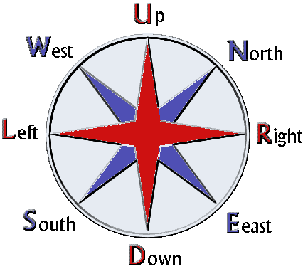

To be able to converse with each other (and meaning the same), the directions
have to be defined with names.
As the UO world is twisted by 45°, North is located diagonal.
I like this system a lot, since it allows single letters representations for
each direction. As the direction is an often seen variable specifier through the
source, this keeps their names short, helping a little at readablilty. (for those who
know the single letter representations) (and exactly for that this booklet his there )
Also this compass refers to things as they are drawn on the screen, helping
one thinking like the client does, but at the same time it respects the
UO mapping coordinates.
